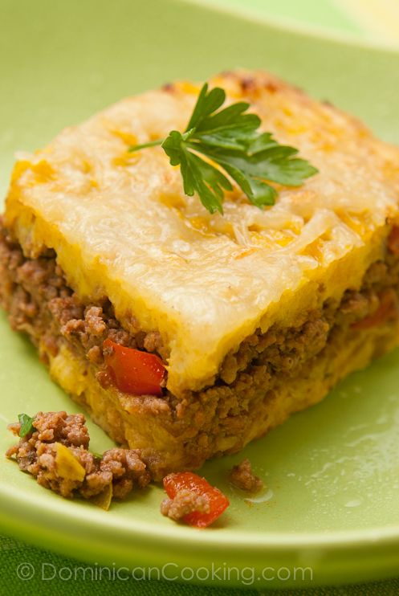

Pastelon de platno maduro

Description
El pastelón de plátano maduro es un plato típico de la República Dominicana. El platano maduro le da un dulzón muy rico lo que hace que nadie se resista a probar este plato.
El pastelón de plátano maduro es un plato típico de la República Dominicana. El platano maduro le da un dulzón muy rico lo que hace que nadie se resista a probar este plato.
Ingredients
- 1 libra carne de rés molida
- 1 cebolla roja cortada en cubos pequeños
- 1 cucharadita ajo machacado
- 1/2 aji cubanela
- 2 cucharadas aceite de oliva
- oregano
- tomillo
- 1/4 taza agua
- 1 taza salsa de tomate
- sal y pimienta al gusto
- 6 plátanos bien maduros
- 1 cucharadita sal
- 2 cucharadas aceite vegetal
- 1/4 taza mantequilla
- 3 cucharadas crema de leche
- 1 taza queso cheddar rallado
- 1 taza Queso mozzarella rallado
Steps
- Para el relleno:
Calienta las 2 cucharadas de aceite en una sartén a fuego medio. Agrega la cebolla, ajo y aji Sofrie por unos segundos, luego agrega la carne molida y cuece revolviendo para que la carne se cuesa uniformemente. Agrega oregano, y tomillo, pon el agua y salsa de tomate. Cuece tapada unos 15 minutos, deja evaporar casi todo el líquido. Sazona con sal y pimienta al gusto. Retira del . fuego y reserva.
- Pela los plátanos, hierve
Retira los plátanos del agua y májalos agregando la mantequilla y la crema de leche hasta que se conviertan en un puré muy suave. Engrasa un molde con el aceite. Pon la mitad de los plátanos en el molde y distribuye uniformemente con un tenedor. Cúbre con la
carney luego con el plátano restante, distribuyendo en capas uniformes. Espolvorea los quesos .
-
Hornea hasta que el queso se dore. Sirve caliente. Es más fácil desmoldar si esperas unos 5 minutos después
de sacar del horno.